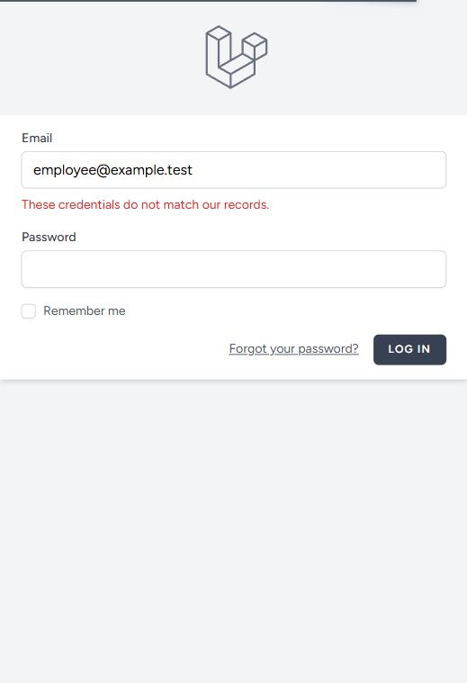
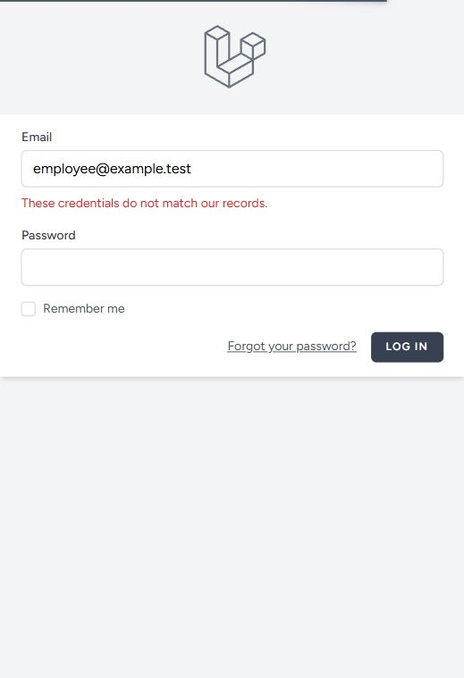
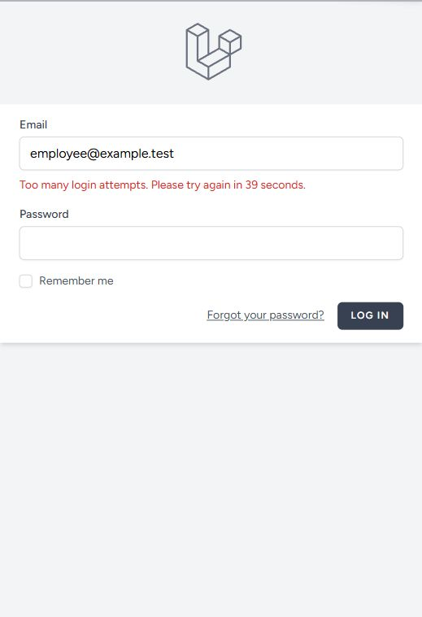
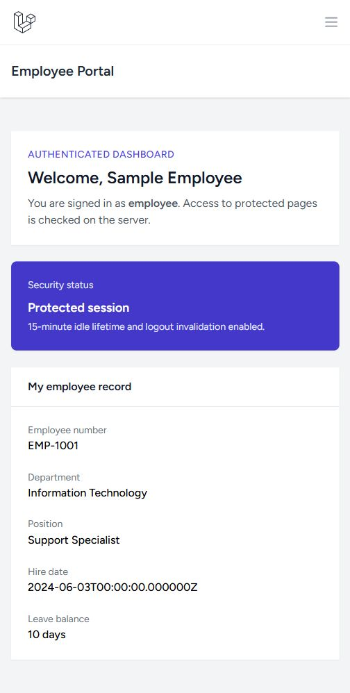

MFA + Account Lockout
Local verification · 16 October 2026 · Asia/Manila
Demo account: employee@example.test · PHP 8.5.11 · Laravel 13.32.0
Source: b111432a82eea9590edacd16baa176c29e44df1f
LOCKOUT — PASS
Five failures activate the email/IP limit; the next correct password is rejected.
MFA — NOT IMPLEMENTED
Password alone reaches the dashboard. Do not claim working MFA.
| Check | Expected | Actual | Result |
|---|
LOCK-01
Five incorrect passwords | Reject all five and remain signed out. | Five credential errors; five auth.login.failed events (IDs 14-18). | PASS |
LOCK-02
Limit active after failure five | Five failures for the same email/IP activate throttling. | Counter = 5; is_limited = true. Fifth response still shows the credential error. | PASS |
LOCK-03
Correct password during lockout | Reject submission six, even with the correct password. | Too many login attempts. Please try again in 39 seconds. | PASS |
LOCK-04
Recovery after expiry | Allow the correct password after the window expires; clear the counter. | Dashboard reached after natural expiry. Counter = 0; auth.login.succeeded recorded. | PASS |
MFA-01
Second authentication factor | If MFA were implemented, require a separate factor before granting dashboard access. | Email and password alone granted dashboard access. No MFA enrollment, challenge, secret, or recovery-code implementation found. | NOT IMPLEMENTED / FAIL against an MFA requirement |
AUDIT-01
Audit events for this run | Record five failures, a blocked attempt, and the successful recovery. | Exactly 5 failed + 1 locked + 1 succeeded, IDs 14-20. | PASS |
Threshold detail: the fifth failure still displays the credentials error. Submission six displays the lockout message. The 60-second window starts with the first failure. This is per email/IP throttling, not a global account-disabled flag.
Automated verification: 4 tests / 44 assertions passed. One passing characterization test confirms the absence of MFA; it does not establish MFA compliance.
Audit correlation: IDs 14–18 = five failures; ID 19 = lockout; ID 20 = successful recovery. Existing accounts and passwords were unchanged.
MFA finding
MFA is not implemented in this audited build. The protected dashboard was reached with email and password only. Source, model, route, and dependency inspection found no enrollment or challenge flow. Email verification and password reset are not MFA login challenges.
Actual application screenshots
Five separate completed failed requests, one correct-password lockout, and one successful password-only login after natural expiration. Original captures are linked below.
Submission 1 — incorrect_password
These credentials do not match our records.
10/16/2026 10:45:49
Submission 2 — incorrect_password
These credentials do not match our records.
10/16/2026 10:45:51Submission 3 — incorrect_password
These credentials do not match our records.
10/16/2026 10:45:52Submission 4 — incorrect_password
These credentials do not match our records.
10/16/2026 10:45:54
Submission 5 — incorrect_password
These credentials do not match our records.
10/16/2026 10:45:55
Submission 6 — correct_password_during_lockout
Too many login attempts. Please try again in 39 seconds.
10/16/2026 10:46:09
Submission 7 — correct_password_after_natural_expiry
Dashboard reached using only email and password. No second-factor challenge was shown.
10/16/2026 10:47:13 Server audit correlation
| ID | Event | Time (UTC) | IP |
|---|
| 14 | auth.login.failed | 10/16/2026 10:45:48 | 127.0.0.1 |
| 15 | auth.login.failed | 10/16/2026 10:45:50 | 127.0.0.1 |
| 16 | auth.login.failed | 10/16/2026 10:45:52 | 127.0.0.1 |
| 17 | auth.login.failed | 10/16/2026 10:45:53 | 127.0.0.1 |
| 18 | auth.login.failed | 10/16/2026 10:45:55 | 127.0.0.1 |
| 19 | auth.login.locked | 10/16/2026 10:46:09 | 127.0.0.1 |
| 20 | auth.login.succeeded | 10/16/2026 10:47:04 | 127.0.0.1 |
Actual code location
app/Http/Requests/Auth/LoginRequest.php:42–90 implements the failure counter, threshold, wait message, and email/IP key. The dependency default timeout is in vendor/laravel/framework/src/Illuminate/Cache/RateLimiter.php:148. Open the numbered code evidence.